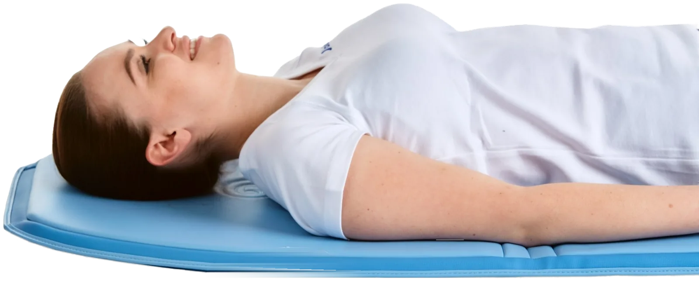
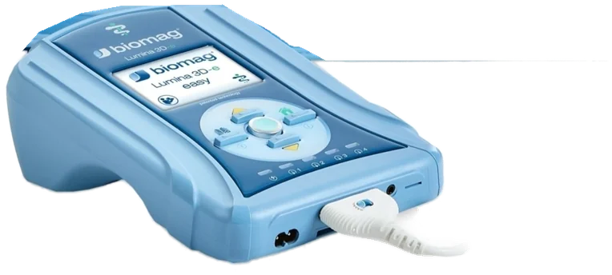
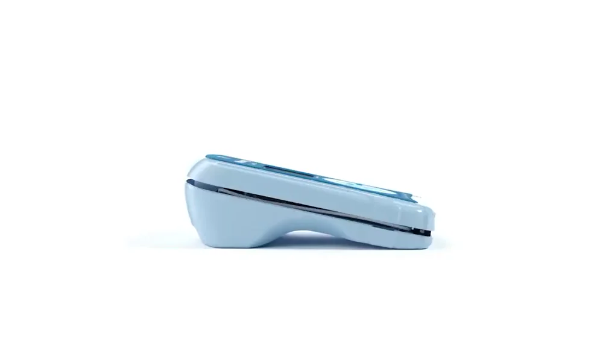
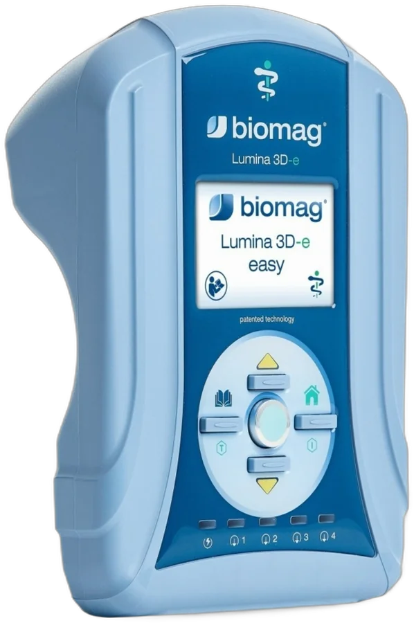
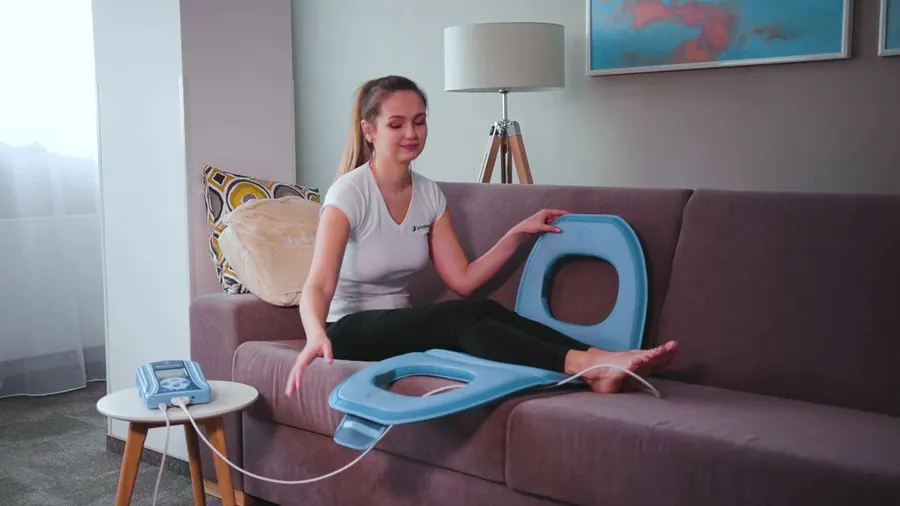
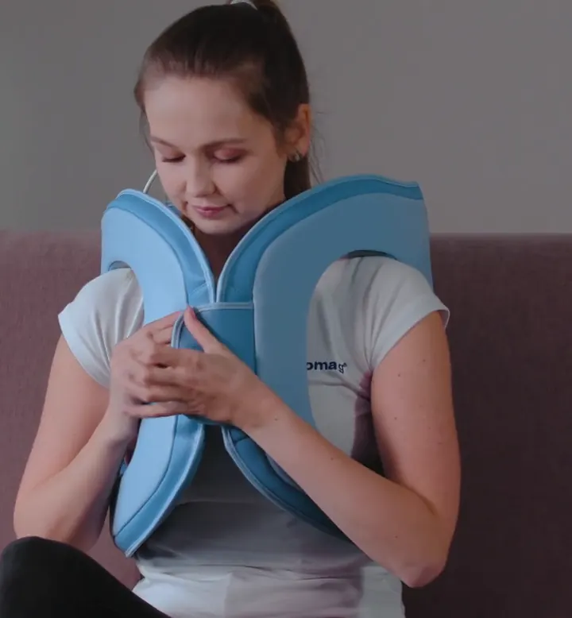
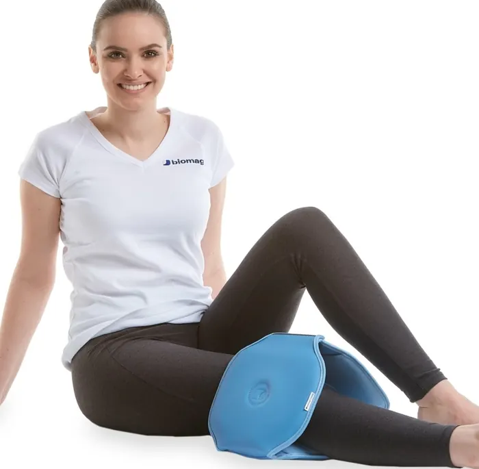
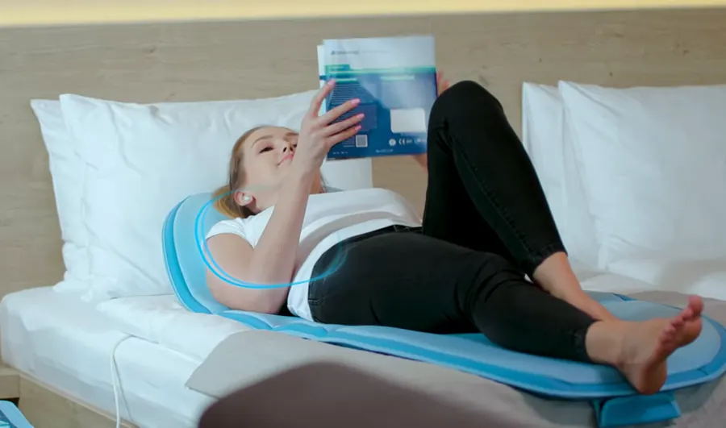
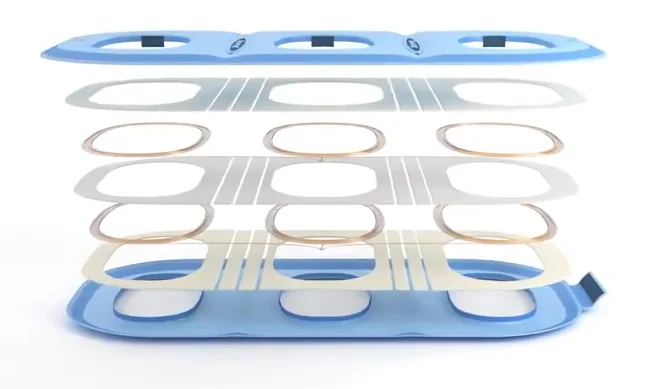

Biomag · מגנטותרפיה (PEMF) לבית · מבית I-Group
הקליניקה הכי קרובה אליכם היא הסלון.
Biomag הוא מכשיר רפואי צ׳כי לטיפול בשדה מגנטי פועם (PEMF), שמפעילים בבית: מניחים את המוליך, לוחצים, ו־20 דקות של טיפול על הספה. מכשיר אחד לכל בני הבית.
- מכשור רפואי מוסמך באירופה
- 4 ערוצים, 6 תוכניות
- יבואן רשמי: I-Group
וואטסאפ או טלפון: 054-9007723


ככה נראה בוקר של טיפול אחד בקליניקה:
- יוצאים מהבית, שוב.
- מחפשים חניה ליד הקליניקה.
- מחכים בתור.
- עשרים דקות טיפול.
- חוזרים לפקקים.
ובשבוע הבא? הכול מההתחלה.

ועכשיו, הטיפול מגיע אליכם.
עם Biomag הטיפול נעשה בבית: מחברים מזרן או מוליך למכשיר, בוחרים תוכנית ונשענים אחורה. בלי נסיעות, בלי חניה ובלי תורים, בבוקר לפני העבודה או בערב מול סדרה.
מה זה בכלל?
מגנטותרפיה: טיפול בשדה מגנטי פועם.
PEMF (Pulsed Electromagnetic Field) היא שיטה לא פולשנית מתחום הפיזיותרפיה: בלי ניתוח, בלי מחטים ובלי משהו לבלוע. משתמשים בה במכוני שיקום, בקליניקות, וגם בבית.
איך זה עובד?
פעימות מגנטיות, ישר לאזור.
המכשיר שולח דרך המוליך פעימות קצרות של שדה מגנטי בתדר נמוך. השדה חודר לרקמות שמתחת למוליך. לפי Biomag, הוא משפיע על פעילות התאים ועל זרימת הדם באזור.
למה זה משמש?
שש תוכניות, שש השפעות.
Biomag בנתה את התוכניות סביב שש השפעות בסיסיות, כטיפול תומך לצד הטיפול שהרופא קבע:
- הקלה על כאב
- תמיכה בריפוי
- הפחתת נפיחות
- זרימת דם
- הרפיית שרירים
- חילוף חומרים

ככה זה נראה מבפנים.
גללו, והמכשיר נפתח לשכבות: מסך מגע, לוח אלקטרוני ו־4 יציאות למוליכים.
הדמיית מוצר: Biomag Medical
טכנולוגיה תלת־ממדית, בפטנט.
זה הדור השני של טכנולוגיית 3D של Biomag. לפי היצרן: פעימות מגנטיות מכמה זוויות, צורת פולס מדויקת יותר וביצועים גבוהים בכל חלק של המוליך.
מכשיר רפואי. מתוצרת צ׳כיה.
Biomag מתמחה בשיטה הזאת מאז 1991. המכשיר מוסמך לפי תקן המכשור הרפואי האירופי MDR (EU) 2017/745. בישראל הוא מיובא ומשווק על ידי I-Group.
ארבעה ערוצים. שש תוכניות. עשרים דקות.
- 4ערוצים
- יציאות נפרדות לגמרי, למוליכים של Biomag
- 35mT
- עוצמת שדה לכל יציאה
- 6תוכניות
- תוכניות הדור החדש 3D-e
- 20דקות
- לטיפול. היצרן ממליץ פעמיים ביום
- 4–81Hz
- תדר נמוך, טווח העבודה של המכשיר
- 8מקומות
- לשמור תוכניות בשם שתבחרו
- מסך מגע צבעוני, חזרה אוטומטית על תוכנית, ספק כוח שעובד כמעט בכל העולם.

למה דווקא Biomag, ולמה בבית?
כי טיפול שקל לעשות הוא טיפול שבאמת עושים. היצרן ממליץ על 20 דקות, לרוב פעמיים ביום, וזה הרבה יותר פשוט כשהמכשיר כבר בסלון.
לא תרופתי, לא פולשני
אין מה לבלוע ואין מחטים. מניחים מוליך על האזור ונשענים אחורה.
בלי נסיעות ותורים
הטיפול מחכה לכם בבית, בבוקר, בערב או בסוף השבוע.
מכשיר אחד לכל הבית
כל בן משפחה מבוגר שהרופא אישר יכול להשתמש באותו מכשיר.
מכשור רפואי מוסמך
מתוצרת צ׳כיה, מוסמך לפי תקן MDR (EU) 2017/745, מיצרן שמתמחה בשיטה מאז 1991.
| נושא | Biomag בבית | טיפולים בקליניקה | מכשירים ביתיים אחרים |
|---|---|---|---|
| איפה ומתי | בבית, מתי שנוח | לפי תור, בנסיעה | בבית |
| מי מטופל | כל בני הבית המתאימים | מטופל אחד בכל תור | תלוי במכשיר |
| תוכניות וערוצים | 6 תוכניות, 4 ערוצים עצמאיים | לפי המטפל | תלוי במכשיר |
| מכשור רפואי מוסמך | כן, EU MDR | תלוי בקליניקה | לא תמיד, כדאי לבדוק |
| ליווי בעברית | I-Group, היבואן בישראל | המטפל | לא תמיד |
מה אומר המחקר?
טיפול PEMF נחקר בניסויים מבוקרים, בעיקר בשחיקת ברכיים (אוסטאוארתריטיס). סקירות שיטתיות מצאו שיפור בתפקוד, ובחלקן גם בכאב, אבל התוצאות לא אחידות, והחוקרים ממליצים על מחקרים נוספים. לכן אנחנו מציגים את Biomag כטיפול תומך, לא כתחליף לרופא. מקורות: Chen et al., J Rehabil Med 2019 · Viganò et al., Cartilage 2020 · Chang et al., Medicina 2026 · Biomag: PEMF therapy
מכשיר אחד. כל הבית.
גב, ברך, כתף. בבוקר, בערב או עם ספר במיטה. לפי היצרן, Biomag מתאים לשימוש של רוב בני המשפחה, אחרי ייעוץ ואבחון של רופא ושלילת התוויות נגד.




במחיר של טיפול אחד בחודש, מערכת שלמה שנשארת שלכם.
מבצע מיוחד ב־24 תשלומיםשלושה צעדים. זהו.
- בוחרים תוכנית במסך המגע.
- מניחים את המוליך על האזור.
- נשענים אחורה לעשרים דקות.
לפני שמתחילים
Biomag מיועד למבוגרים, אחרי התייעצות עם רופא. הוא אינו מתאים, בין השאר, בהריון ולמי שיש קוצב לב. אנחנו עוברים איתכם על ההתאמה לפני כל רכישה, ומדריכים אתכם בהפעלה.

הקליניקה הבאה שלכם נמצאת בסלון.
- שולחים הודעה בוואטסאפ או מתקשרים.
- נציג I-Group חוזר אליכם, מסביר ובודק התאמה.
- מקבלים את פרטי המבצע ב־24 תשלומים.
או התקשרו: 054-9007723